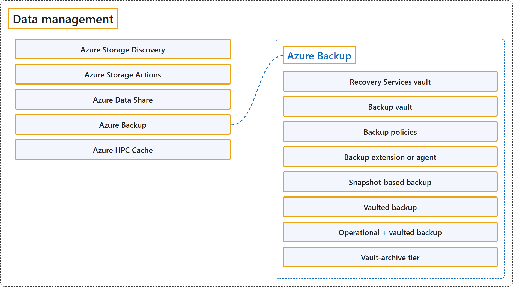

8.6 Data Management
Classification

Glossary
| Term | Definition | 中文翻译 | Source |
|---|---|---|---|
| Azure Storage Discovery Azure 存储发现 |
"Azure Storage Discovery is a fully managed service that provides enterprise-wide visibility into your Azure Blob Storage and Azure Data Lake Storage estate." | Azure 存储发现是一项完全托管的服务，提供对 Azure Blob 存储和 Azure Data Lake Storage 资产的企业级可见性。 | Microsoft, 2025c, para. 1 |
| Azure Storage Actions Azure 存储操作 |
"Azure Storage Actions is a fully managed platform designed to automate data management tasks for Azure Blob Storage and Azure Data Lake Storage." | Azure 存储操作是一个完全托管的平台，旨在为 Azure Blob 存储和 Azure Data Lake Storage 自动执行数据管理任务。 | Microsoft, 2025b, para. 1 |
| Azure Data Share Azure 数据共享 |
"Azure Data Share enables organizations to securely share data with multiple customers and partners." | Azure 数据共享让组织能够安全地共享数据，共享对象是多个客户和合作伙伴。 | Microsoft, 2026a, para. 1 |
| Azure Backup Azure 备份 |
"Azure Backup is a native Azure service that helps you protect your data and restore it when required." | Azure 备份是一项原生 Azure 服务，帮助你保护数据并在需要时还原数据。 | Microsoft, 2026b, para. 1 |
| Recovery Services vault 恢复服务保管库 |
"Recovery Services vault or Backup vault: Stores backup data and recovery points, and acts as a security boundary." | 恢复服务保管库或备份保管库：存放备份数据和恢复点，并充当安全边界。 | Microsoft, 2026b, "Key components in Azure Backup" section, list item 1 |
| Backup vault 备份保管库 |
"Recovery Services vault or Backup vault: Stores backup data and recovery points, and acts as a security boundary." | 恢复服务保管库或备份保管库：存放备份数据和恢复点，并充当安全边界。 | Microsoft, 2026b, "Key components in Azure Backup" section, list item 1 |
| Backup policies 备份策略 |
"Backup policies: Define when backups run and how long data is retained." | 备份策略：规定备份何时运行、数据保留多久。 | Microsoft, 2026b, "Key components in Azure Backup" section, list item 2 |
| Backup extension or agent 备份扩展或代理 |
"Backup extension or agent: Enables workload-aware or file-level backups." | 备份扩展或代理：实现感知工作负载的备份或文件级备份。 | Microsoft, 2026b, "Key components in Azure Backup" section, list item 3 |
| Snapshot-based backup 基于快照的备份 |
"Snapshot-based backup – Fast backups and restores for supported workloads." | 基于快照的备份：为受支持的工作负载提供快速的备份和还原。 | Microsoft, 2026b, "Backup types and tiers" section, list item 1 |
| Vaulted backup 保管库备份 |
"Vaulted backup – Copies data to a vault for durability and isolation." | 保管库备份：把数据复制到保管库，以获得持久性和隔离。 | Microsoft, 2026b, "Backup types and tiers" section, list item 2 |
| Operational + vaulted backup 操作备份 + 保管库备份 |
"Operational + vaulted backup (for some services) – Combines fast restore and long-term retention." | 操作备份 + 保管库备份（部分服务）：兼得快速还原和长期保留。 | Microsoft, 2026b, "Backup types and tiers" section, list item 3 |
| Vault-archive tier 保管库存档层 |
"Vault-archive tier – Stores backup data in archived state for long-term retention, enabling cost-efficient storage of infrequently accessed recovery points that are retained primarily to meet compliance requirements." | 保管库存档层：把备份数据以存档状态保存，用于长期保留，让主要为满足合规要求而保留、很少访问的恢复点存得更省钱。 | Microsoft, 2026b, "Backup types and tiers" section, list item 4 |
| Azure HPC Cache Azure HPC 缓存 |
"Azure HPC Cache speeds access to your data for high-performance computing (HPC) tasks." | Azure HPC 缓存加快数据访问速度，用于高性能计算 (HPC) 任务。 | Microsoft, 2025a, para. 1 |
References
- Microsoft. (2025a, September 30). What is Azure HPC Cache? Microsoft Learn. https://learn.microsoft.com/en-us/azure/hpc-cache/hpc-cache-overview
- Microsoft. (2025b, August 1). What is Azure Storage Actions. Microsoft Learn. https://learn.microsoft.com/en-us/azure/storage-actions/overview
- Microsoft. (2025c, October 9). What is Azure Storage Discovery? Microsoft Learn. https://learn.microsoft.com/en-us/azure/storage-discovery/overview
- Microsoft. (2026a, January 9). What is Azure Data Share? Microsoft Learn. https://learn.microsoft.com/en-us/azure/data-share/overview
- Microsoft. (2026b, September 16). What is the Azure Backup service? Microsoft Learn. https://learn.microsoft.com/en-us/azure/backup/backup-overview